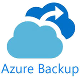

Cloud a la medida de tu negocio
Analizamos tus aplicaciones y servidores y diseñamos la combinación adecuada de nube pública, cloud privado y equipos propios, con costes previsibles.
- Microsoft Azure
- Google Cloud
- MCloud
- Azure Virtual Desktop
- Azure Backup
Cloud en M&G
No todas las cargas de trabajo deben ir a la nube, ni a la misma nube. Una aplicación de gestión antigua, un servidor de archivos o un entorno de escritorio remoto tienen necesidades distintas de rendimiento, coste y cumplimiento normativo.
Trabajamos con Microsoft Azure, Google Cloud y MCloud, nuestra plataforma de cloud privado. Así podemos recomendarte la opción más adecuada para cada caso, y combinarlas con tu infraestructura local cuando convenga.
Retos que resolvemos
Situaciones que vemos a menudo y cómo las abordamos.
El servidor de la oficina está al final de su vida
Comparamos renovarlo con migrarlo a Azure, Google Cloud o MCloud, con números a tres años.
La factura de la nube no para de crecer
Revisamos tamaños, horarios y reservas para pagar solo lo que se usa.
Si cae la oficina, nadie puede trabajar
Réplica y copias en la nube para recuperar el servicio en otra ubicación.
Qué incluye
Puedes contratar el servicio completo o solo las partes que necesites.
Análisis y diseño
Qué conviene migrar, qué mantener en local y cuánto costará cada opción a tres años vista.
Migración a Azure
Servidores, aplicaciones y archivos trasladados con un plan de pruebas y de vuelta atrás.
Google Cloud
Despliegue y administración de máquinas virtuales y almacenamiento en Google Cloud.
Cloud privado MCloud
Servidores alojados y gestionados por M&G, con un interlocutor directo y costes fijos.
Entornos híbridos
Conexión segura entre tus oficinas y la nube, con identidad y red unificadas.
Escritorios remotos
Acceso a aplicaciones y escritorios desde cualquier dispositivo con Azure Virtual Desktop o escritorio remoto.
Copias y recuperación
Copia de seguridad en la nube y réplica de servidores para volver a trabajar rápido tras una caída.
Control de costes
Revisión mensual del consumo, ajuste de tamaños y reservas para evitar sorpresas en la factura.
MCloud, nuestro cloud privado
MCloud es la plataforma de M&G para alojar servidores y servicios de clientes. Es una alternativa a la nube pública para empresas que prefieren un coste mensual estable y un equipo técnico cercano que conoce su entorno.
Acceso MCloud- Servidores virtuales gestionados
- Copias de seguridad incluidas
- Coste mensual previsible
- Soporte directo del equipo de M&G
Tecnologías con las que trabajamos
Fabricantes y plataformas que implantamos y gestionamos a diario en este servicio.
Nube pública


Cloud privado
- MCloud
Servicios
- Azure Virtual Desktop

- Azure Site Recovery
- Azure Files
Cómo lo hacemos
Un método claro, con un responsable técnico de principio a fin.
Inventario
Revisamos servidores, aplicaciones, volúmenes de datos y dependencias.
Propuesta
Comparamos opciones y costes, y elegimos contigo la plataforma de destino.
Migración
Trasladamos por fases, con pruebas previas y ventanas fuera del horario laboral.
Operación
Supervisamos rendimiento, seguridad, copias y costes cada mes.
Qué recibes
- Comparativa de costes por opción
- Diseño de la arquitectura
- Plan de migración y de vuelta atrás
- Informe mensual de consumo
Cómo contratarlo
Elige la fórmula que mejor encaja con tu empresa. Se pueden combinar.
Proyecto cerrado
Un alcance, un calendario y un presupuesto definidos desde el inicio. Ideal para migraciones, renovaciones o implantaciones concretas.
Servicio gestionado MGCare
Una cuota mensual que incluye la gestión continua, la supervisión y el soporte a tus usuarios.
Auditoría y consultoría
Un análisis independiente con recomendaciones priorizadas, para decidir con datos antes de invertir.
Preguntas frecuentes
Sobre Cloud. Si tienes otra duda, escríbenos.
¿Es siempre más barato ir a la nube?
No siempre. Por eso empezamos comparando el coste total de cada opción antes de recomendar una migración.
¿Azure, Google Cloud o MCloud?
Depende de tus aplicaciones, de lo que ya uses y de cómo prefieras pagar. Azure encaja muy bien con Microsoft 365; MCloud es ideal si buscas un coste fijo y un trato directo.
¿Cuánto tiempo sin servicio implica una migración?
Planificamos las ventanas de cambio fuera del horario laboral para que el impacto sea mínimo o nulo.
¿Podemos volver atrás si algo no funciona?
Sí. Cada migración incluye un plan de vuelta atrás y no retiramos los sistemas originales hasta validar el nuevo entorno.
Otros servicios
¿Hablamos de tu infraestructura?
Cuéntanos cómo trabajáis hoy y te proponemos los siguientes pasos.